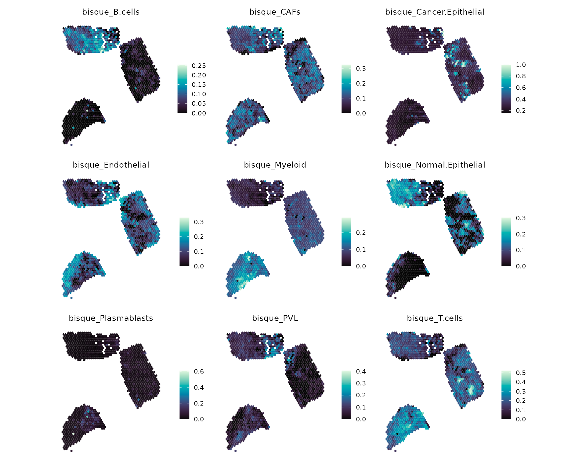
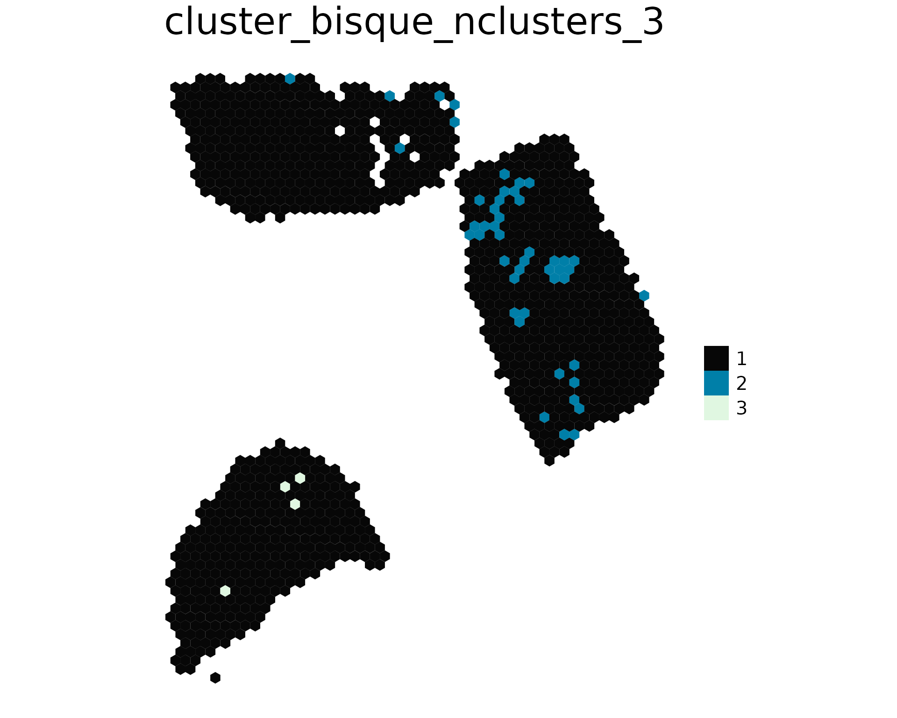

Importing external deconvolution results
spacedeconv_import_deconvolution_results.RmdThis vignette shows how to import cell-type estimates obtained with external deconvolution tools into spacedeconv for spatial visualization and downstream analysis. As an example, we use omnideconv to run Bisque on spatial transcriptomics data, import the resulting estimates into a SpatialExperiment, and visualize and cluster spots based on their estimated cell-type composition.
Install omnideconv
Install omnideconv in a Conda environment named
r-omnideconv, following the omnideconv
installation instructions. Choose the minimal installation and
install the dependencies for Bisque, which is the only
deconvolution method used here. Keep spacedeconv in its own
spacedeconv-env environment.
The code below can be run interactively in two separate R sessions:
one in r-omnideconv and one in
spacedeconv-env, both using the same working directory.
Preparing the input files
For demonstration, we load and preprocess the example datasets
included with spacedeconv. For your own analysis, use your spatial
transcriptomics data and an appropriate annotated single-cell reference
instead. Run the following in an R session in
spacedeconv-env:
library(spacedeconv)
library(SingleCellExperiment)
#> Loading required package: SummarizedExperiment
#> Loading required package: MatrixGenerics
#> Loading required package: matrixStats
#>
#> Attaching package: 'matrixStats'
#> The following objects are masked from 'package:Biobase':
#>
#> anyMissing, rowMedians
#>
#> Attaching package: 'MatrixGenerics'
#> The following objects are masked from 'package:matrixStats':
#>
#> colAlls, colAnyNAs, colAnys, colAvgsPerRowSet, colCollapse,
#> colCounts, colCummaxs, colCummins, colCumprods, colCumsums,
#> colDiffs, colIQRDiffs, colIQRs, colLogSumExps, colMadDiffs,
#> colMads, colMaxs, colMeans2, colMedians, colMins, colOrderStats,
#> colProds, colQuantiles, colRanges, colRanks, colSdDiffs, colSds,
#> colSums2, colTabulates, colVarDiffs, colVars, colWeightedMads,
#> colWeightedMeans, colWeightedMedians, colWeightedSds,
#> colWeightedVars, rowAlls, rowAnyNAs, rowAnys, rowAvgsPerColSet,
#> rowCollapse, rowCounts, rowCummaxs, rowCummins, rowCumprods,
#> rowCumsums, rowDiffs, rowIQRDiffs, rowIQRs, rowLogSumExps,
#> rowMadDiffs, rowMads, rowMaxs, rowMeans2, rowMedians, rowMins,
#> rowOrderStats, rowProds, rowQuantiles, rowRanges, rowRanks,
#> rowSdDiffs, rowSds, rowSums2, rowTabulates, rowVarDiffs, rowVars,
#> rowWeightedMads, rowWeightedMeans, rowWeightedMedians,
#> rowWeightedSds, rowWeightedVars
#> The following object is masked from 'package:Biobase':
#>
#> rowMedians
#> Loading required package: GenomicRanges
#> Loading required package: stats4
#> Loading required package: S4Vectors
#>
#> Attaching package: 'S4Vectors'
#> The following object is masked from 'package:utils':
#>
#> findMatches
#> The following objects are masked from 'package:base':
#>
#> expand.grid, I, unname
#> Loading required package: IRanges
#> Loading required package: GenomeInfoDb
data("spatial_data_3")
data("single_cell_data_1")
data("single_cell_data_2")
data("single_cell_data_3")
spe <- spacedeconv::preprocess(spatial_data_3)
#> ── spacedeconv ─────────────────────────────────────────────────────────────────
#> ℹ testing parameter
#> ✔ parameter OK [64ms]
#>
#> ℹ Removing 137 observations with umi count below threshold
#> ✔ Removed 137 observations with umi count below threshold [161ms]
#>
#> ℹ Removing 13049 variables with all zero expression
#> Warning in spacedeconv::preprocess(spatial_data_3): There are 13 mitochondrial
#> genes present. Consider removing them.
#> ✔ Removed 13049 variables with all zero expression [181ms]
#>
#> ℹ Checking for ENSEMBL Identifiers
#> ! Warning: ENSEMBL identifiers detected in gene names
#> ℹ Checking for ENSEMBL Identifiersℹ Consider using Gene Names for first-generation deconvolution tools
#> ℹ Checking for ENSEMBL Identifiers✔ Finished Preprocessing [10ms]
# Bisque requires reference cells from at least two donors (three or more recommended).
sce <- cbind(single_cell_data_1, single_cell_data_2, single_cell_data_3)
sce <- spacedeconv::preprocess(sce)
#> ── spacedeconv ─────────────────────────────────────────────────────────────────
#> ℹ testing parameter
#> ✔ parameter OK [92ms]
#>
#> ℹ Removing 675 observations with umi count below threshold
#> ✔ Removed 675 observations with umi count below threshold [1.3s]
#>
#> ℹ Removing 4354 variables with all zero expression
#> Warning in spacedeconv::preprocess(sce): There are 13 mitochondrial genes
#> present. Consider removing them.
#> ✔ Removed 4354 variables with all zero expression [1.3s]
#>
#> ℹ Checking for ENSEMBL Identifiers
#> ! Warning: ENSEMBL identifiers detected in gene names
#> ℹ Checking for ENSEMBL Identifiersℹ Consider using Gene Names for first-generation deconvolution tools
#> ℹ Checking for ENSEMBL Identifiers✔ Finished Preprocessing [9ms]
saveRDS(spe, "spatial_data.rds")
saveRDS(SummarizedExperiment::assay(spe, "counts"), "spatial_counts.rds")
saveRDS(sce, "single_cell_reference.rds")Keep these files in the working directory used by both sessions. The
supplied single-cell datasets come from three different donors in the
same breast cancer study. They contain the celltype_major
annotation and the donor identifier orig.ident.
Preprocessing retains raw counts, as required for Bisque. For your own
data, use an appropriate reference with at least two donors (three or
more recommended) and substitute the annotation and donor columns.
Run omnideconv on spatial data
Activate the omnideconv environment in your terminal and start R:
Each spatial spot is supplied as one sample: rows are genes and columns are spots. For Bisque, use raw counts for both the spatial data and the annotated single-cell reference. Gene identifiers and organism must agree between the two datasets.
This example reads spatial_counts.rds (a gene-by-spot
count matrix) and single_cell_reference.rds (a
SingleCellExperiment with a counts assay and
celltype_major annotations and orig.ident
donor IDs).
library(omnideconv)
spatial_counts <- readRDS("spatial_counts.rds")
reference <- readRDS("single_cell_reference.rds")
fractions <- omnideconv::deconvolute(
bulk_gene_expression = as.matrix(spatial_counts),
single_cell_object = reference,
cell_type_column_name = "celltype_major",
batch_ids = reference$orig.ident,
assay_name = "counts",
method = "bisque"
)
saveRDS(fractions, "bisque_results.rds")The result has spots as rows and cell types as columns. Spot IDs are retained for importing the results. Spatial coordinates are not used in this omnideconv call; they remain in the original spatial object. Method suitability for sparse spot data should be assessed for the dataset being analyzed.
Import into spacedeconv
Switch environments and start a new R session:
Load the original SpatialExperiment and import the
results:
library(spacedeconv)
spe <- readRDS("spatial_data.rds")
fractions <- readRDS("bisque_results.rds")
spe <- import_deconvolution_results(
spe,
results = fractions,
result_name = "bisque"
)
available_results(spe, method = "bisque")
#> [1] "bisque_B.cells" "bisque_CAFs"
#> [3] "bisque_Cancer.Epithelial" "bisque_Endothelial"
#> [5] "bisque_Myeloid" "bisque_Normal.Epithelial"
#> [7] "bisque_Plasmablasts" "bisque_PVL"
#> [9] "bisque_T.cells"The importer aligns rows by spot ID and stores columns such as
bisque_T.cells in colData(spe). Results must
cover all spots in spe; values must be finite and
non-negative. Values are not normalized, and existing columns are not
overwritten. Expression data, coordinates, and images are preserved.
Visualize and cluster
Use the same result name to plot the imported cell-type estimates or cluster spots by their estimated composition:
plot_spatial(spe, result = "bisque", density = FALSE,
title_size = 10, font_size = 8, legend_size = 12)
spe <- spacedeconv::cluster(
spe,
spmethod = "bisque",
method = "hclust",
dist_method = "euclidean",
nclusters = 3
)
#> ── spacedeconv ─────────────────────────────────────────────────────────────────
#> ℹ testing parameter
#> ✔ parameter OK [1.1s]
#>
#> ℹ Extracting data
#> ℹ Clustering: bisque
#> ℹ Extracting dataℹ By: hclust
#> ℹ Extracting dataℹ Number of clusters: 3
#> ℹ Extracting dataℹ Distance Method: euclidean
#> ℹ Extracting dataℹ Hclust Method: complete
#> ℹ Extracting data✔ Extracted data for clustering [97ms]
plot_spatial(spe, result = "cluster_bisque_nclusters_3", density = FALSE)
get_cluster_features(spe, clusterid = "cluster_bisque_nclusters_3", topn = 3)
#> $`1`
#> bisque_T.cells bisque_CAFs bisque_Endothelial
#> 0.06851505 0.06678813 0.06173991
#>
#> $`2`
#> bisque_Cancer.Epithelial bisque_Plasmablasts bisque_Myeloid
#> 3.71732171 0.05178834 -0.43623936
#>
#> $`3`
#> bisque_Plasmablasts bisque_B.cells bisque_PVL
#> 9.7330334 1.7713292 0.3231505For datasets with a different sample ID, pass that ID to
plot_spatial() via sample_id. The same import
workflow works with results from other tools: provide a numeric
spot-by-cell-type matrix with row and column names, and choose a
distinct result_name.